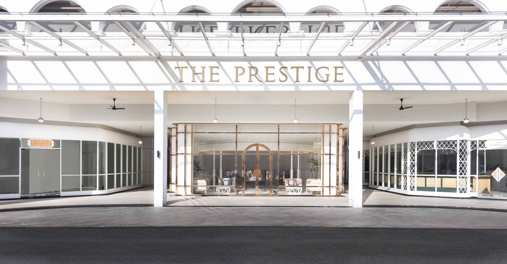
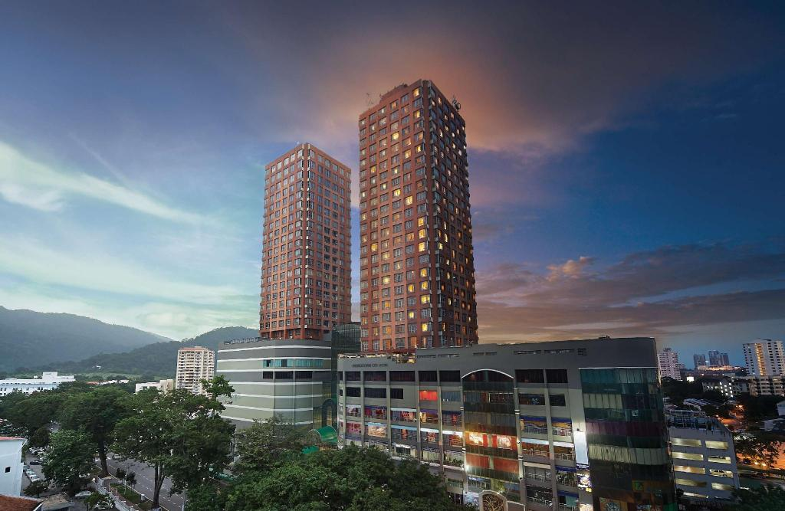
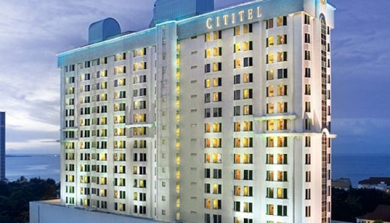
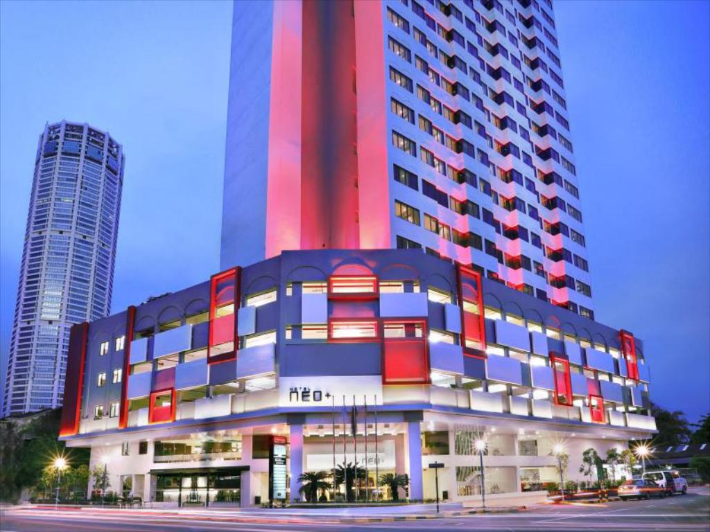
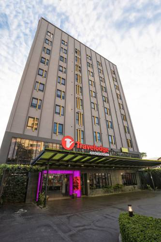
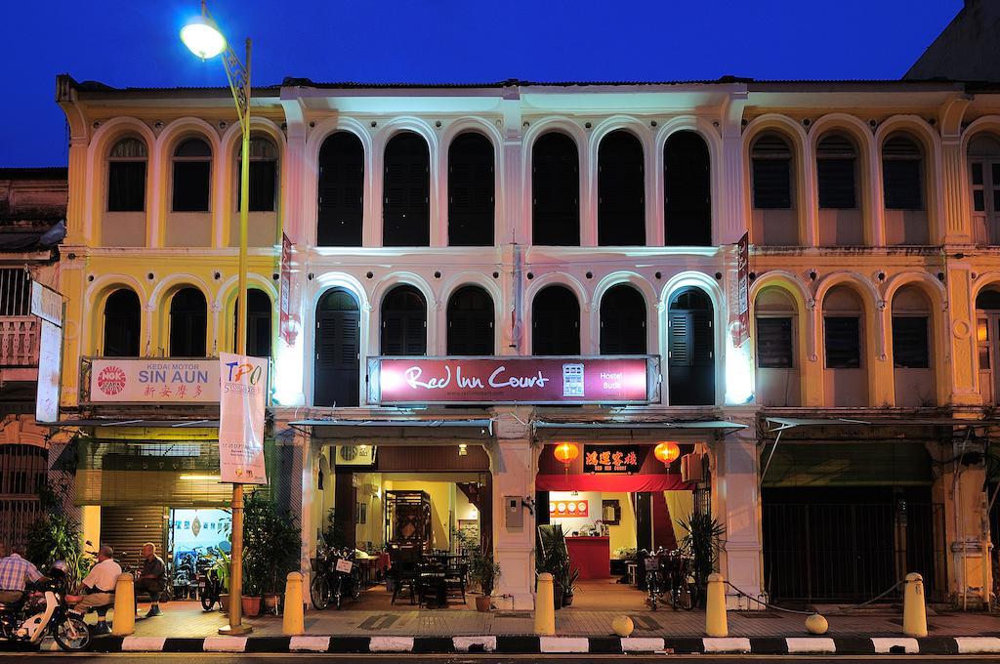

Best of Penang Island. Let's Explore!
Best of Penang Island. Let's Explore!
HOTEL, PENANG
We serve you the top hotel until the lowest price hotel!

Eastern & Oriental Hotel, Penang
5-star hotel
RM 610 - 3 days 2 night
10, Lebuh Farquhar, George Town, 10200 George Town, Pulau Pinang
Located in the UNESCO World Heritage Site of Georgetown, Eastern & Oriental Hotel offer 19th century heritage accommodations in Penang. It features an outdoor swimming pool and guests can enjoy meals at the in-house restaurant. Offering a 24-hour butler service, free WiFi is available throughout the property.
For more details, click Eastern & Oriental Hotel

The Prestige Hotel Penang
4-star hotel
RM 298 - 2 days 1 night
8, Gat Lebuh Gereja, George Town, 10300 George Town, Pulau Pinang
The Prestige Hotel is a luxury homegrown hospitality label located in the heart of the Georgetown UNESCO world heritage site. Inspired by its colonial Victorian heritage, it welcomes the urbane traveller to a magical contemporized colonial scene, with 162 rooms, an all-day dining outlet, an arcade with a mix of retail outlets, event spaces and a rooftop infinity pool.
For more details, click The Prestige Hotel

Berjaya Penang Hotel
3-star hotel
RM 162 - 2 days 1 night
1-Stop Midlands Park, Jalan Burma, 10350 George Town, Pulau Pinang
Berjaya Penang Hotel (formerly known as Georgetown City Hotel) is centrally located in Georgetown, the capital city of the Malaysian state of Penang. Our 4-star hotel in Penang is about 30 minutes away from the Penang International Airport and 5 minutes from the seafront promenade, Gurney Drive.
For more details, click Berjaya Penang Hotel

Cititel Hotel Penang
4-star hotel
RM 141 - 2 days 1 night
66, Jalan Penang, George Town, 10000 George Town, Pulau Pinang
In a 16-storey downtown building with views of the Malacca Strait, this refined hotel is an 11-minute walk from the shops and offices at the Komtar Tower, and 2 km from the 18th-century Fort Cornwallis. Conservative rooms include complimentary Wi-Fi and flat-screen TVs, as well as rainfall showers, minibars, and tea and coffeemakers. Some have strait views; upgraded rooms feature modern furnishings.
For more details, click The Cititel Hotel

Hotel Neo+ Penang
3-star hotel
RM 107 - 2 days 1 night
68, Jalan Gurdwara, George Town, 10300 George Town, Pulau Pinang
This modern hotel with views of the Malacca Strait is a 4-minute stroll from a bus stop, an 8-minute walk from the Komtar Tower skyscraper and 2 km from the landmark Fort Cornwallis. Providing views of the city or the Malacca Strait, the contemporary rooms feature free Wi-Fi, flat-screen TVs and safes, plus tea and coffeemaking facilities, and minifridges.
For more details, click The Hotel Neo+ Penang

Travelodge Hotel Georgetown
3-star hotel
RM 96 - per night
101, Jalan Macalister, 10400 George Town, Pulau Pinang
On a bustling street in the city centre, this contemporary hotel lies a 12-minute walk from the Komtar complex, 3 km from the food stalls of Gurney Drive and 4 km from Fort Cornwallis. Featuring wood floors and colourful accents, the trendy rooms offer free Wi-Fi, flat-screen TVs and pillow-top mattresses, plus desks, minifridges, and tea and coffeemaking facilities; upgraded rooms add sofas.
For more details, click The Travelodge Hotel

Old Penang Guesthouse
2-star hotel
RM 43 - per night
53, Lorong Love, George Town, 10200 George Town, Pulau Pinang
Set in an early 20th-century building with an old-world vibe, this modest hostel is a 13-minute walk from the late 18th-century Fort Cornwallis, a 6-minute walk from Kapitan Keling Mosque and 2 km from the ferry terminal to the mainland. The basic single-sex and mixed dorms sleep from 2 to 12 guests, and come with free Wi-Fi and lockers; bathrooms are shared. Private rooms add antique furnishings and original local artwork; some have en suite facilities.
For more details, click Old Penang Guesthouse

Red Inn Court
2-star hotel
RM 38 - per night
35C, 35, Jalan Masjid Kapitan Keling, George Town, 10200 George Town, Pulau Pinang
Nestled in a lively, historic village, this informal hostel in a French Colonial–style building is a 5-minute walk from the Khoo Kongsi Chinese temple, a 10-minute walk from the Jubilee Clock Tower and an 11-minute walk from the Clan Jetties of Penang. Casual dorms offer free Wi-Fi, lockers, and cozy bunk beds with reading lamps, plus shared bathrooms with heat-recycling showers. Some have TVs. Relaxed private rooms feature platform beds, and some have en suite facilities.
For more details, click The Red Inn Court
 - Najihah
- Najihah
- Danish